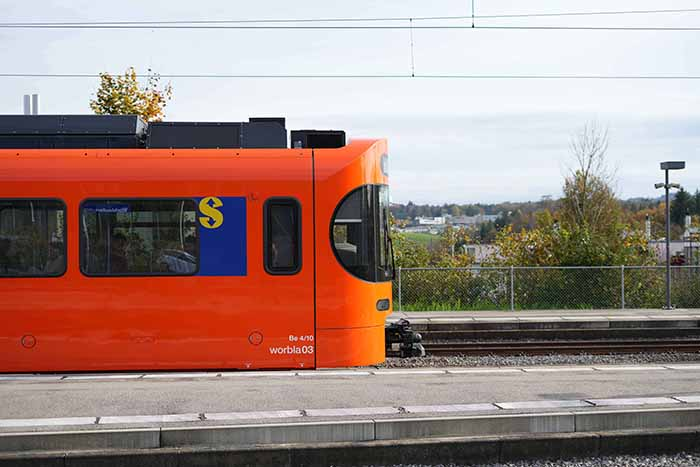
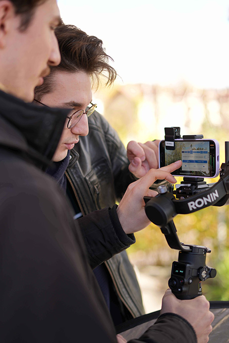

Als Lokführer von Treneo und Multimedia-Allrounder interessiert sich Cyrill für immer neue Möglichkeiten, aus Wunschvorstellungen Realität werden zu lassen. Im Zug trifft man ihn meist zwischen zwei Kopfhörern mit fetziger elektronischer Musik oder einem guten Hörbuch wieder.
Als Kommunikation Direktor bringt Sarina eine grundierte Ausbildung im kaufmännischen Bereich und in der Unternehmenskommunikation mit. In der Freizeit mag Sie in der Natur zu sein und leckeres Essen. Fun Fact, mit ihren 20 Jahren braucht aber immer noch ihr Lieblingskuscheltier zum Einschlafen.
Als ausgebildete Mediamatikerin begeistert sich Cindy für die Konzeption und Erstellung von digitalen Medieninhalten. Wenn sie in den Zug steigt, ist sie meist völlig ausser Atem, weil sie das Haus in letzter Sekunde verlassen hat. Spät aber immer noch rechtzeitig für eine Punktlandung.
Als Filmspezialist kommt Mick seiner Leidenschaft für Video und Animation immer und überall nach. Dabei verheddert er sich gerne mal in seinen Ladekabel, die er überall im Abteil auslegt, um seinen mobilen Schnittplatz zu betreiben. Teilweise etwas träumerisch durchstreift er so das Land, immer auf der Suche nach einem neuen Abenteuer.
Als Gestalterin hat Yiyun seit ihrer Kindheit chinesische Malerei und Kalligrafie gelernt. Bis 2019 hat Yiyun über 20 internationale Kino- Arthouse- und Dokumentarfilme mit ‘China Blue Film’ produziert. Seit sie in der Schweiz wohnt, konzentriert sie sich auf Design und Pilzsammlung.
Wir revolutionieren mobiles Arbeiten im Zug.
Unser Ziel ist es, mobile Arbeitsmöglichkeiten zu schaffen, die für alle zugänglich sind. Damit wollen wir das Reisen für Pendler:innen zu einer angenehmen Möglichkeit für produktives Arbeiten machen. Langfristig möchten wir, dass die Treneo zum vollständig akzeptierten Büro für unterwegs wird und wir dadurch eine bessere Work-Life-Balance bei Pendler:innen jeden Alters erzielen können. So möchten wir schweizweit in allen interregionalen Zügen unsere Treneo WorkSpaces anbieten.
...neu zu erfinden und stetig zu verbessern.
... auf Kund:innen-Bedürfnisse masszuschneidern.
... hochwertig und umfangreich umzusetzen.
Das im Jahr 2020 gegründete Start-up Treneo hat den Sitz in Zürich.
Momentan zählt das Unternehmen sechs Mitarbeiter und Mitarbeiterinnen, seit der Studienzeit pendeln Sie
alle regelmässig und gerne.
Seit 2022 beschäftigen wir uns mit der Verbesserung der Arbeitsmöglichkeiten im öffentlichen Verkehr.
Mit dabei ist Stadler Rail, als Partner setzen sie die Ideen von Treneo um und stellen die
Treneo-Waggons her.
Seit Ende 2022 arbeitet Treneo mit der SBB zusammen und testet die neuen Waggons auf dem Schweizer
Schienennetz.